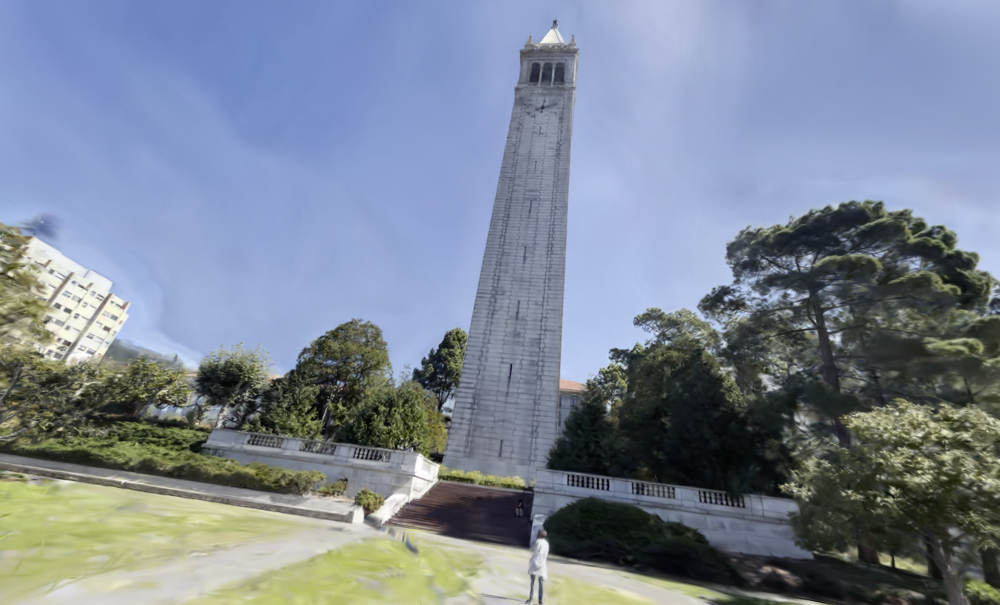
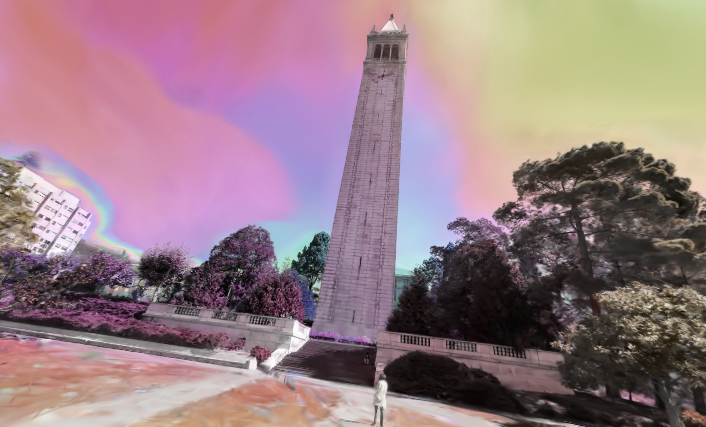

Splat Painter MILESTONE
Link to original proposal: https://lionelvlv.github.io/cs184finalprojproposal/
Link to milestone webpage: https://lionelvlv.github.io/cs184finalprojproposal/milestone.html
Link to milestone presentation slides: https://docs.google.com/presentation/d/1BeTmgsHKelIx9dDM8IEYcSKHKlAD_SY7ZTUbwKCLgH8/edit?usp=sharing
Link to milestone video: https://youtu.be/aUT8wkmP_JI
Background and Project Scope
We were originally planning on modifying the code for gsplat to adjust the color properties of Gaussians within the scene. However, this would involve modifying PyTorch tensors and digging through Nerfstudio’s large codebase which would have been way too big of a scope within the project’s timeline. We will instead be forking Viser, Nerfstudio’s 3D web-based visualizer build in Python. Gaussian splat rendering is still a work in progress feature in Viser being able to render the splat scenes without spherical harmonic support. Our group will be adding a feature to paint the gaussians using the mouse cursor. We will be using Viser’s API to trigger an event on mouse clicks and use raycasting to capture the splat points within our selection area and modify their color properties.
Setup Process and Challenges
Setting up the correct environment with all the necessary packages took a lot of work. During Patrick’s initial setup of Viser, he ran into a bug present in the development install of viser not present in the version when `pip install viser` is run. In the development version, Gaussian splat scenes were outputting empty scenes. He reported the issue to one of the contributors of Nerfstudio and it got fixed in the same day. Meanwhile, Jordan and Lionel faced additional challenges getting the environment running under WSL due to OS constraints, which required extra debugging. Fortunately, we now have a working setup across all our systems.
Project Progress and Upcoming Goals
After reviewing the codebase, we were given advice to render a single gaussian as seen here.
After we rendered a single Gaussian, we figured out how to edit the color properties in the scene data. We took the loaded in data stored into the SplatFile class and we iterated through all the RGB values and were able to set them to new rgb values. We then experimented with adjusting the RGB values based on the position of the Gaussian center values and we tried converting them to HSV values to maintain the saturation and value properties while adjusting the hue.
In the upcoming weeks, we'll get raycasting working. We currently have a way to make a selection box within the screen by clicking and holding our mouse cursor. We just need to use the extrinsic and intrinsic properties of the Viser camera object to project rays into the world and capture which Gaussians to select to modify them.
Here are some examples of color filters we have applied to our scene
|

|

|

|

|

|
|